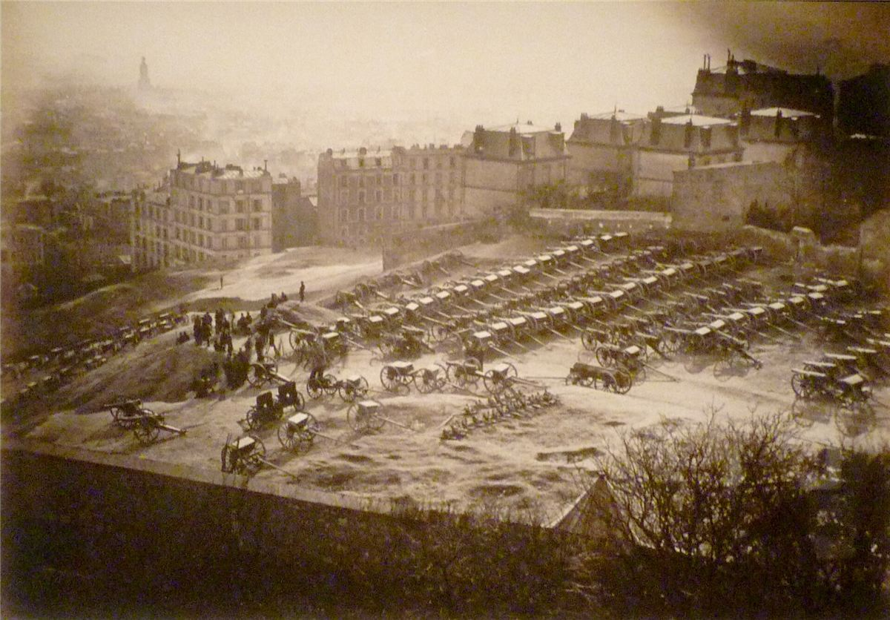
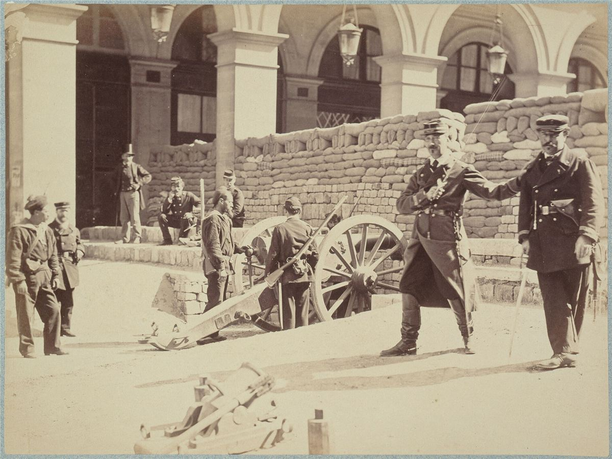

Pendant 72 jours, au printemps 1871, Paris a vécu sans gouvernement venu d'en haut. Ouvrières et ouvriers, artisans, institutrices, employés ont pris en main la ville. Pour les anarchistes, la Commune reste la première grande tentative d'une société qui s'organise par la base, et une leçon sur ce qui l'a perdue.
Une ville affamée et trahie
- Juillet 1870 : Napoléon III déclare la guerre à la Prusse. Le 2 septembre, il est fait prisonnier à Sedan ; le 4, la République est proclamée.
- Septembre 1870 à janvier 1871 : Paris est assiégé. On mange les chevaux, les chats, les rats, les animaux du Jardin des Plantes. La Garde nationale, armée de citoyens, compte des centaines de milliers d'hommes, surtout des quartiers populaires.
- Janvier 1871 : le gouvernement capitule. Une Assemblée à majorité monarchiste est élue ; elle s'installe à Versailles, met fin à la solde des gardes nationaux et exige le paiement immédiat des loyers et des dettes suspendus pendant le siège.
18 mars : les canons de Montmartre

À l'aube, le chef du gouvernement, Adolphe Thiers, envoie l'armée reprendre les canons de la Garde nationale, payés par souscription des Parisiens et parqués sur la butte Montmartre. Les femmes du quartier, debout avant tout le monde, donnent l'alerte et entourent les soldats. La troupe refuse de tirer sur la foule et fraternise. Deux généraux sont tués. Thiers abandonne Paris avec l'armée et l'administration. Le soir, le Comité central de la Garde nationale s'installe à l'Hôtel de Ville.
La Commune proclamée

Le Comité central refuse de garder le pouvoir : il organise des élections le 26 mars. Le 28, la Commune est proclamée devant une foule immense place de l'Hôtel-de-Ville. À Lyon, Marseille, Saint-Étienne, Toulouse, Narbonne, Le Creusot, des communes naissent aussi, mais sont écrasées en quelques jours. Paris reste seul.
La Commune légifère vite : remise des loyers, séparation de l'Église et de l'État, ateliers abandonnés confiés aux ouvriers, école gratuite et laïque. Voir les décrets et les femmes de la Commune.
La Semaine sanglante
Dès avril, Versailles attaque. Le 21 mai, l'armée entre dans Paris par une porte mal gardée. Pendant une semaine, quartier après quartier, les communardes et communards se battent sur les barricades. L'armée fusille sans jugement, au parc Monceau, au Luxembourg, à la caserne Lobau. Des otages sont exécutés par des communards. Le 28 mai, les derniers combattants sont fusillés contre un mur du cimetière du Père-Lachaise : le mur des Fédérés.
Le nombre de morts reste débattu : de plusieurs milliers à environ 20 000 selon les historiens. Puis viennent plus de 40 000 arrestations, les conseils de guerre, les bagnes, et la déportation de plusieurs milliers de personnes en Nouvelle-Calédonie, dont Louise Michel. L'amnistie n'arrive qu'en 1880.
Chronologie
- 4 septembre 1870Chute de l'Empire, proclamation de la République.
- Septembre 1870 - janvier 1871Siège de Paris, famine.
- 28 janvier 1871Armistice ; élection d'une Assemblée monarchiste installée à Versailles.
- 18 marsÉchec de la prise des canons de Montmartre ; Thiers quitte Paris.
- 26 marsÉlection du Conseil de la Commune.
- 28 marsProclamation de la Commune à l'Hôtel de Ville.
- 2 avrilSéparation de l'Église et de l'État ; premiers combats contre Versailles.
- 11 avrilCréation de l'Union des femmes pour la défense de Paris.
- 16 avrilDécret sur les ateliers abandonnés.
- 19 avrilDéclaration au peuple français : l'autonomie des communes et leur fédération.
- 1er maiCréation d'un Comité de salut public, contestée par la minorité.
- 16 maiLa colonne Vendôme, symbole impérial, est abattue.
- 21-28 maiSemaine sanglante.
- 1872-1880Procès, déportations en Nouvelle-Calédonie, puis amnistie.
Dans ce dossier
- Comment la Commune s'organisait, avec schémas.
- Les décrets, les femmes et l'héritage.
- À voir : le documentaire Les Damnés de la Commune, raconté par une ambulancière de 1871.
- Dans la bibliothèque : Kropotkine sur la Commune et les Mémoires de Louise Michel.
Sources et pour aller plus loin
Lire
- Histoire de la Commune de 1871, Prosper-Olivier Lissagaray, La Découverte.Écrit en 1876 par un combattant de la Semaine sanglante : le récit classique, vivant et précis.
- Commune(s), 1870-1871. Une traversée des mondes au XIXe siècle, Quentin Deluermoz, Seuil, 2020.La synthèse historique la plus récente, qui replace Paris parmi les autres communes de France et du monde.
- La Semaine sanglante. Mai 1871, légendes et comptes, Michèle Audin, Libertalia, 2021.Combien de morts ? Une enquête rigoureuse, cimetière par cimetière.
- Paris libre 1871, Jacques Rougerie, Seuil, 1971.Par le grand historien de la Commune.
Regarder
- Les Damnés de la CommuneLe documentaire de Raphaël Meyssan, à voir en entier sur notre page Vidéos.
- La Commune (Paris, 1871), Peter Watkins, 2000.Un film-fleuve tourné comme un reportage en direct, avec des habitantes et habitants d'aujourd'hui.
Sur le web
- La Commune de Paris sur WikipédiaUn article très complet et sourcé.
- La Semaine sanglanteLe déroulé de la répression, du 21 au 28 mai 1871.
- Les Amies et Amis de la Commune de Paris 1871L'association fondée par des communards : histoire, balades, montée au mur des Fédérés.
Dossier rédigé par Mamie Commune à partir de travaux d'historiennes et d'historiens et de textes des mouvements concernés. Libre de reproduction.